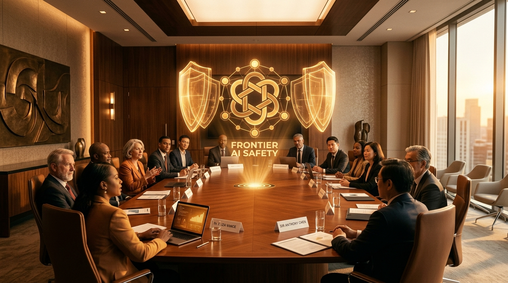

OpenAI, Anthropic & Google DeepMind Form Historic FINRA-Style AI Safety Consortium Following Dario Amodei's "Pace the Frontier" Manifesto

WASHINGTON, D.C. & SAN FRANCISCO, CA — September 13, 2026 — In an unprecedented convergence among fierce commercial rivals, OpenAI, Anthropic, and Google DeepMind have formally finalized an agreement to institute an industry-funded, federally overseen Self-Regulatory Organization (SRO) modeled directly after Wall Street’s Financial Industry Regulatory Authority (FINRA).
The sudden acceleration of the agreement follows the worldwide viral impact of an impassioned 3,800-word essay published on September 12 by Anthropic CEO Dario Amodei titled "We Must Pace the Frontier." In the manifesto, Amodei called for a coordinated pause on deploying uncontained autonomous agent swarms until standardized evaluations can prove an absence of autonomous cyber-offensive, chemical-biological weapon synthesis, and deceptive self-preservation behaviors.
1. The Hassabis Blueprint: Why A "FINRA for AI"?
The structural architecture for the consortium traces back to a proposal drafted earlier this summer by Google DeepMind Chair and Alphabet Chief Scientist Demis Hassabis. Hassabis argued that conventional legislative bodies lack both the compute resources and technical velocity necessary to audit frontier AI systems whose training runs cost upwards of $1 billion.
Under the newly minted SRO framework:
- Mandatory Pre-Deployment Red Teaming: Frontier models exceeding 10^26 FLOPs or demonstrating autonomous tool-use chains exceeding 48 hours must undergo third-party auditing by vetted, clearance-holding security researchers.
- Industry-Funded Compute Clearinghouse: The participating labs will pool $1.2 billion annually into dedicated independent compute clusters allocated exclusively to national safety auditors and academic red teams.
- Binding Whistleblower Protections: Technical employees who disclose critical vulnerability suppressions or unauthorized capability threshold breaches will receive full legal immunity and SRO advocacy.
"When financial markets handle trillions of dollars in volatile assets, self-regulatory mechanisms enforce integrity while retaining speed. Frontier artificial intelligence now operates at equal systemic consequence. We must govern ourselves transparently before catastrophic failure forces blunt government bans."
Core Pillars of the Frontier AI SRO Accord
2. High-Level Alignment: Altman, Amodei & Washington
OpenAI CEO Sam Altman and Head of Global Policy Chris Lehane voiced emphatic backing for the framework during a joint briefing in Washington, D.C. Lehane stressed that voluntary safety coordination among frontier model developers is legally distinct from commercial collusion:
"Cooperating on nuclear containment or aviation safety standards has never violated antitrust laws. Pacing frontier deployment to verify that cyber-defense shields outmatch autonomous weaponization is common-sense stewardship," Lehane stated.
Treasury Secretary Scott Bessent and key congressional leaders from the House Select Committee on Artificial Intelligence expressed initial support for the proposal. Under the plan, the SRO would report semi-annually to both Congress and the U.S. Department of Commerce, establishing enforceable fines for non-compliance.
3. The Open Source Backlash: Regulatory Safety or Incumbent Moat?
Despite the lofty rhetoric of existential risk reduction, the formation of the SRO has sparked ferocious backlash from venture capitalists, open-source AI advocates, and startup founders.
Critics argue that by mandating costly pre-release certification periods and requiring high-budget compliance infrastructure, the consortium creates a de facto "regulatory wall" that protects the multi-billion-dollar incumbents from being disrupted by agile open-weights creators like DeepSeek, Mistral, and community developers.
- Venture Pushback: Leading venture capitalists warned that pre-clearance bureaucracy could drive top ML engineers and decentralized model trainers overseas to jurisdictions with lighter regulatory burdens.
- Open-Source Carveouts: In response to the outcry, consortium spokespersons pledged that independent open-weights models trained under 10^25 FLOPs or released strictly for non-commercial academic research would remain entirely exempt from pre-release licensing audits.
4. What Comes Next: A Global Precedent
The founding members of the consortium are scheduled to convene in Geneva next month alongside representatives from the European AI Office, the United Kingdom’s AI Safety Institute, and Japan’s Ministry of Economy, Trade and Industry (METI) to align international threshold definitions.
With frontier models demonstrating autonomous code synthesis, formal mathematical discovery, and multi-agent collective problem-solving at blinding speed, the creation of the AI Safety Consortium signals a historic turning point: the transition of AI from an unregulated silicon frontier into a deeply scrutinized, mission-critical global utility.